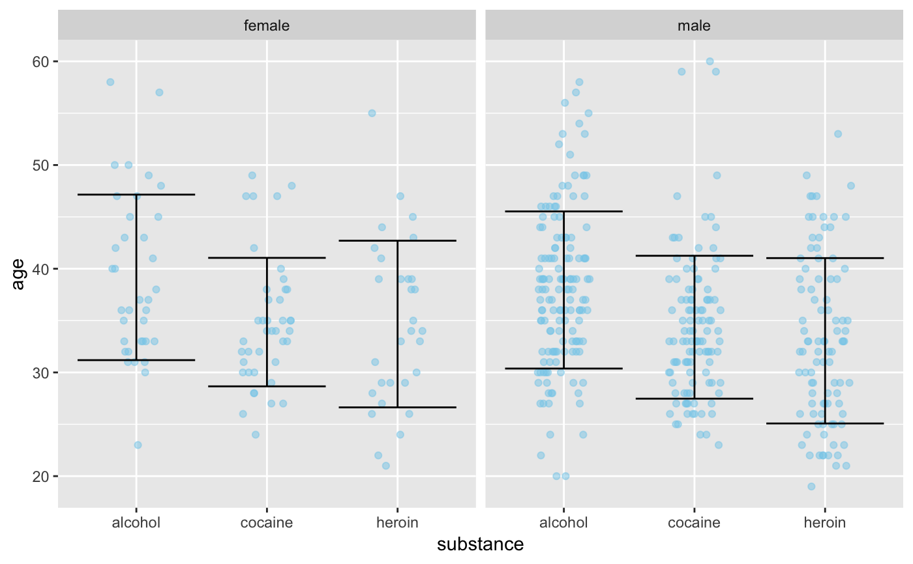

A rotated version of geom_errorbar().
gf_errorbarh(object = NULL, gformula = NULL, data = NULL, alpha, color, group, linetype, size, xlab, ylab, title, subtitle, caption, geom = "errorbarh", stat = "identity", position = "identity", show.legend = NA, show.help = NULL, inherit = TRUE, environment = parent.frame(), ...)
| object | When chaining, this holds an object produced in the earlier portions of the chain. Most users can safely ignore this argument. See details and examples. |
|---|---|
| gformula | A formula with shape |
| data | The data to be displayed in this layer. There are three options: If A A |
| alpha | Opacity (0 = invisible, 1 = opaque). |
| color | A color or a formula used for mapping color. |
| group | Used for grouping. |
| linetype | A linetype (numeric or "dashed", "dotted", etc.) or a formula used for mapping linetype. |
| size | A numeric size or a formula used for mapping size. |
| xlab | Label for x-axis. See also |
| ylab | Label for y-axis. See also |
| title | Title, sub-title, and caption for the plot.
See also |
| subtitle | Title, sub-title, and caption for the plot.
See also |
| caption | Title, sub-title, and caption for the plot.
See also |
| geom | A character string naming the geom used to make the layer. |
| stat | The statistical transformation to use on the data for this layer, as a string. |
| position | Position adjustment, either as a string, or the result of a call to a position adjustment function. |
| show.legend | logical. Should this layer be included in the legends?
|
| show.help | If |
| inherit | A logical indicating whether default attributes are inherited. |
| environment | An environment in which to look for variables not found in |
| ... | Additional arguments. Typically these are
(a) ggplot2 aesthetics to be set with |
a gg object
There is discrepancy between the information required for gf_errorbar()
and gf_errobarh(). It expected that this will change in a future release
of ggplot2.
Positional attributes (a.k.a, aesthetics) are specified using the formula in gformula.
Setting and mapping of additional attributes can be done through the
use of additional arguments.
Attributes can be set can be set using arguments of the form attribute = value or
mapped using arguments of the form attribute = ~ expression.
In formulas of the form A | B, B will be used to form facets using
facet_wrap() or facet_grid().
This provides an alternative to
gf_facet_wrap() and
gf_facet_grid() that is terser and may feel more familiar to users
of lattice.
Evaluation of the ggplot2 code occurs in the environment of gformula.
This will typically do the right thing when formulas are created on the fly, but might not
be the right thing if formulas created in one environment are used to create plots
in another.
if (require(mosaicData) && require(dplyr)) { HELP2 <- HELPrct %>% group_by(substance, sex) %>% summarise( mean.age = mean(age), median.age = median(age), max.age = max(age), min.age = min(age), sd.age = sd(age), lo = mean.age - sd.age, hi = mean.age + sd.age ) gf_jitter(substance ~ age, data = HELPrct, alpha = 0.5, height = 0.2, width = 0, color = "skyblue") %>% gf_errorbarh( substance ~ lo + hi, data = HELP2, inherit = FALSE) %>% gf_facet_grid( ~ sex) gf_jitter(age ~ substance, data = HELPrct, alpha = 0.5, width = 0.2, height = 0, color = "skyblue") %>% gf_errorbar( lo + hi ~ substance, data = HELP2) %>% gf_facet_grid( ~ sex) }